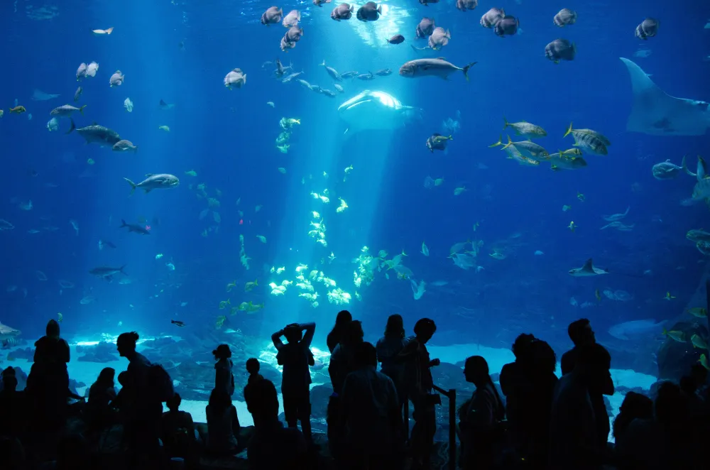
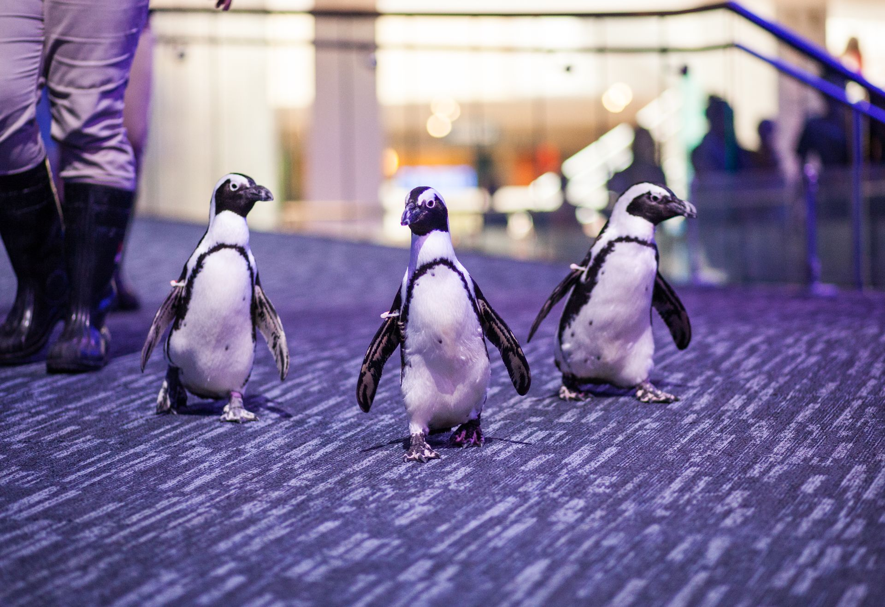
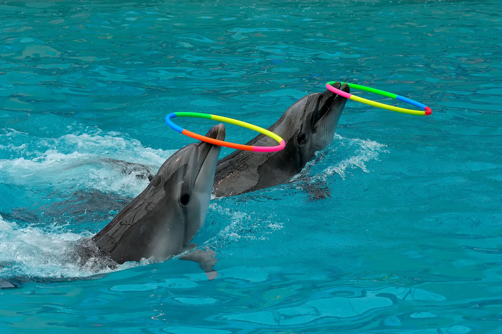
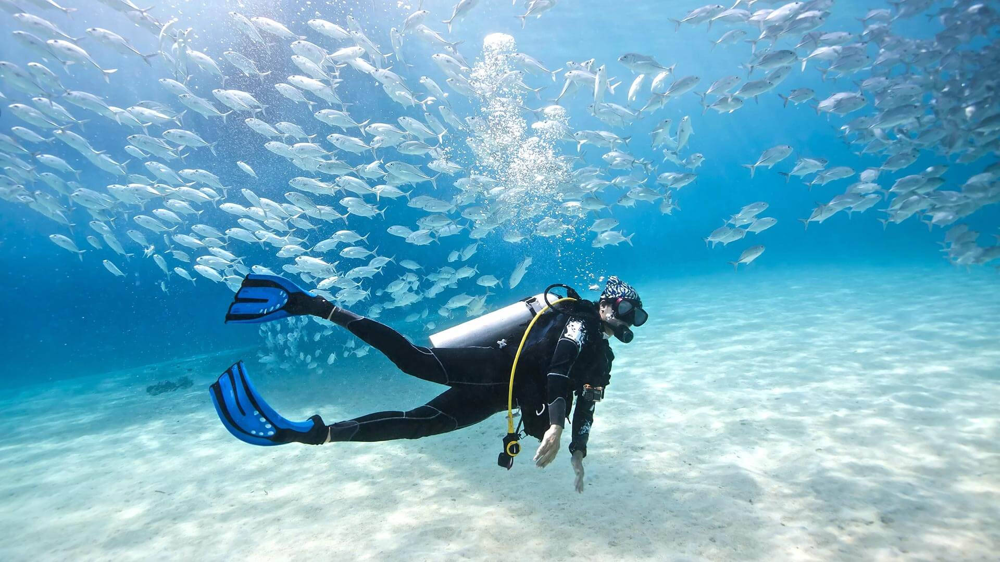
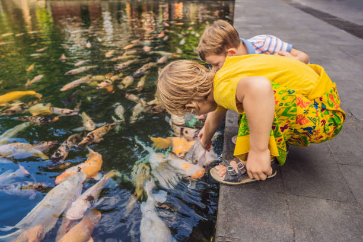
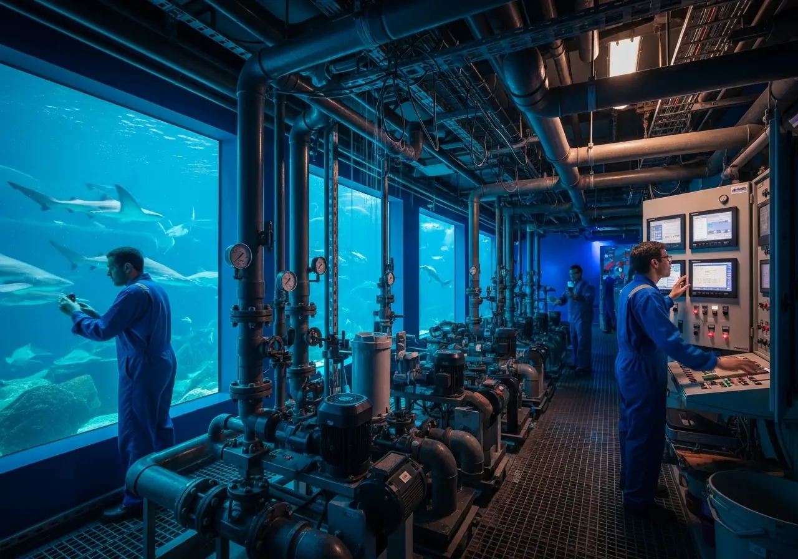
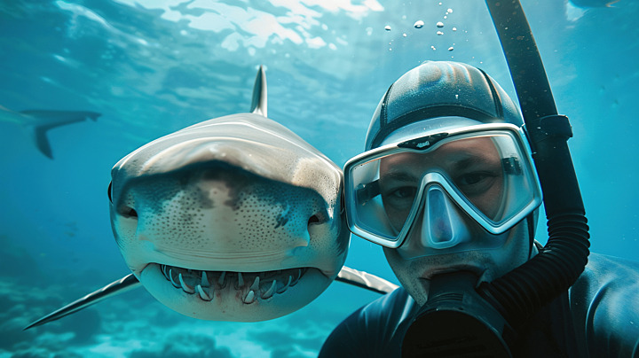

Activities
Create an unforgettable experience with truly fascinating scenery at Finfinity Aquarium. Step into a realm where penguins, dolphins, and other cute marine animals welcome you warmly. And don't forget to try out the scuba diving experience from the other side of the glass to meet our marine life firsthand.


Encounter African Penguins
African Penguins are actually known as "Jackass Penguins" because their call sounds incredibly similar to a donkey braying! Unlike arctic penguins, these little guys are adapted to warmer climates and love nesting in burrows under coastal bushes.

The Dolphin Show
Did you know they have unique "signature whistles"? Every dolphin develops its own specific whistle early in life, which acts like a name so other dolphins can call out to them individually. They are essentially masters of underwater communication!

Discover Scuba Diving Experience
The first time you breathe underwater, you will realize that the ocean is much quieter than you think. It is actually filled with a symphony of clicks, pops, and rustles from crustaceans and fish.

Interactive Feeding Sessions
Join our expert aquarists to help distribute specialized, nutrient-rich snacks to our friendly inhabitants. You'll learn the secrets of species-specific diets while experiencing the thrill of a hungry school of fish gathering right at your fingertips.

Behind the Scenes Tour
What you see in the exhibits is only 20% of the aquarium! This tour takes you to our massive "Life Support Systems." These systems include giant protein skimmers that work like high-tech filters to remove waste, ensuring our water quality is often cleaner than natural seawater.

Snorkelling with Sharks
Despite their fearsome reputation, most shark species found in managed encounters are curious rather than aggressive. Sharks are also "living fossils"—they have been around for over 400 million years, meaning they survived the mass extinction that wiped out the dinosaurs!